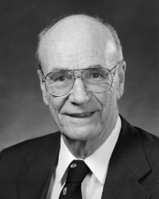

Please note: the AAS Obituaries are temporarily being hosted on this website while their full content is being ingested into the PubPub publishing platform newly adopted by the Bulletin of the American Astronomical Society. When the migration is complete, your existing links will take you to the final, migrated content. Contact peter.williams@aas.org with any questions.
Donald Edward Osterbrock (1924-2007)
Donald Edward Osterbrock, one of the leading figures of post-World War II astronomy, died suddenly of a heart attack on 11 January 2007, while walking near his office at the University of California, Santa Cruz. He was 82 years old. His initials spelled D.E.O. (God in latin!), but he was known simply as Don to his many friends and colleagues.
Don's long and productive career spanned five decades. His scientific work helped shape our understanding of lower main-sequence stars, the ionized interstellar medium, and active galactic nuclei. He was also a highly respected historian of astronomy who shed new light on 19th- and 20th-century astronomy.
Don was born in Cincinnati, Ohio, on 13 July 1924. Both of his parents were of German descent and valued hard work, education, and science. They both completed their high-school education at night while working full-time during the day. His father eventually became a professor of electrical engineering at the University of Cincinnati. Don's plan to become an astronomer was put on hold when the Japanese attacked Pearl Harbor in 1941. After graduation from high school, Don joined the United States Army and trained as a meteorologist, taking all of the physics and mathematics courses required for a bachelor's degree in physics from the University of Chicago. He was eventually sent to islands in the Pacific Ocean but never was in harm's way. After three years of service, Don returned to Chicago to obtain his bachelor's degree in 1948, his M.S. in astronomy in 1949, and a Ph.D. in astronomy in 1952.
Don's years at the University of Chicago and the University's Yerkes Observatory in Williams Bay, Wisconsin, were pivotal for his career and personal life. He came in contact with such luminaries as Otto Struve, Bengt Strömgren, Subrahmanyan Chandrasekhar, and William W. Morgan. At Yerkes, he also met and married Irene L. Hansen, a native of Williams Bay, who was employed as a member of the Yerkes staff. They had a son, William, now living in Santa Cruz; two daughters, Laura of Seattle, Washington, and Carol of Santa Cruz; and three grandchildren.
Don did a theoretical Ph.D. thesis with Chandrasekhar calculating the effects of gravitational interactions between interstellar clouds and stars, but arguably his best known graduate work was observational in nature, helping Morgan map the nearest spiral arms of our Galaxy. Morgan put Don's name on the landmark 1952 paper (Morgan, Sharpless, & Osterbrock, AJ, 57, p. 3, 1952), even though, according to Don's own account in his 2000 autobiography A Fortunate Life in Astronomy, the work was mostly Morgan's. This generous gesture by Morgan likely fashioned what was to become Don's own trademark generosity towards his Ph.D. students and colleagues for years to come.
After obtaining his Ph.D. degree, Don spent a single but very productive year as a postdoctoral fellow at Princeton University, becoming interested in the stellar structures of red dwarfs. Using numerical integration methods generously provided by Martin Schwarzschild, Don produced the first models of red dwarfs that took into account their outer convective layers (Osterbrock, ApJ, 118, pp. 529-546, 1953). These calculations also inspired Fred Hoyle and Schwarzschild to successfully model red giant stars with similar convective envelopes.
In 1953, Osterbrock accepted an instructorship at Caltech, joining a young astronomy department led by Jesse Greenstein. Direct access to Caltech's outstanding astronomical facilities on Mounts Wilson and Palomar marked a turning point in Don's career, since it allowed him to pursue his observational interests in gaseous nebulae. Drawing on his expertise in atomic physics, and a very productive collaboration via air mail with young atomic theorist Michael Seaton, he pioneered the use of spectroscopic methods for the study of gaseous nebulae.
In a daring move in 1958, Don left Caltech for the University of Wisconsin, to appease his wife's and his own homesickness for the Midwest. There he continued his work on gaseous nebulae, both observational and theoretical, often as part of the Ph.D. thesis of one of his many excellent graduate students. As time went on, Don became increasingly fascinated by the emission-line spectra of active galactic nuclei (AGN), and this fed a growing need for larger telescope apertures. In 1973, the ``lure of the big telescope in the land of clear skies'' (his own words from his 2000 autobiography) won out, and he finally accepted the long-pending offer from the Chancellor of the University of California at Santa Cruz to become director of Lick Observatory.
Lick's 120-inch telescope and its unique image-dissector scanner were ideally suited for the spectroscopic AGN survey that Don had in mind at the time. In the decade and a half that followed, Don amassed arguably the best and largest collection of high-quality spectra on AGN in the world, published several seminal papers based on these unique data, and became in the process one of the world's leading authorities on AGN. During that same period, Don published his ``little blue book'' on the Astrophysics of Gaseous Nebulae (1974). This textbook and the two subsequent revisions Astrophysics of Gaseous Nebulae and Active Galactic Nuclei (1989 and 2005—the later edition, with co-author Gary Ferland) have been the standard references for graduate courses and researchers in the field for more than thirty years.
This prolific period of Don's career was doubly remarkable considering that, from 1973 to 1981, he was the Director of Lick Observatory. This was a time when tough choices had to be made in order to get the 10-meter Keck Telescopes project under way. Don very effectively and diplomatically guided the upper echelons of the University of California, Santa Cruz, through this process. He also served as president of the American Astronomical Society from 1988 to 1990, no doubt having too much time on his hands after stepping down from the Lick directorship!
Don received several awards and honors for his research work. In 1991, he won lifetime achievement awards from the American Astronomical Society and Astronomical Society of the Pacific, two of astronomy's highest honors. In 1997, the Royal Astronomical Society awarded him its Gold Medal, its highest honor, seldom given to an American astronomer. He was a member of the National Academy of Sciences, the American Academy of Arts and Sciences, and the American Philosophical Society. He received honorary D.Sc. degrees from five universities. Over the years, Don produced 21 Ph.D. students who turned out a significant number of today's researchers in AGN and emission line studies.
Mostly after his retirement in 1992, Don authored numerous books, historical studies, and biographies of key figures in 19th- and 20th-century astronomy. He felt that history was too important to be left to historians, and adhered to the ``great man'' theory of history (that aims to explain history by the impact of great men or women) rather than pursue the deconstructionist approach of historians. In recognition for this work, the AAS's Historical Astronomy Division awarded him in 2002 the Leroy E. Doggett Prize, the highest award given to a historian of astronomy.
Don was a brilliant scientist, a natural leader, and a gifted historian, yet he was also very modest and unassuming. His firm handshake, warm, infectious smile, and congenial personality were hard to resist. He thrived in the companies of his colleagues and students, freely sharing his ideas on science, history of science, or history in general. In his later years, he seemed at his best when observing on top of Mount Hamilton's Lick Observatory, once the Sun had set and the photons from an AGN were quietly and effortlessly being captured for the next exposure. He would then often kick back on ``his'' La-Z-Boy recliner in the 120-inch telescope control room and take off on one of his many fascinating stories about the history of astronomy. These were truly wonderful moments, and many of us are very grateful to have had the opportunity to share them with him.
Don will always have a very special place in our hearts. He was a great mentor, a wonderful role model, and a true gentleman. Our very fond memories of our time with him will never cease to inspire us. He will always be an Ideal to which to aspire.
Obituary written by: Sylvain Veilleux (University of Maryland)
BAAS Citation: BAAS, 2007, 39, 1075
SAO/NASA ADS Bibcode: 2007BAAS...39.1075V